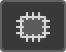
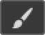
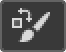
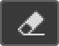
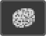
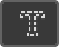
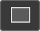

|
Move Tool |
Move Tool digunakan untuk memindahkan layer, seleksi, dan panduan dalam dokumen Photoshop. Aktifkan "Pilih Otomatis" untuk secara otomatis memilih lapisan atau grup yang Anda klik. |
 |
Artboard Tool |
Alat Artboard memungkinkan Anda mendesain beberapa web atau UX (pengalaman pengguna) dengan mudah untuk berbagai perangkat atau ukuran layar. |
 |
Rectangular Marquee Tool |
The Rectangular Marquee Tool menarik garis seleksi persegi panjang. Tekan dan tahan Shift saat Anda menyeret untuk menggambar pilihan persegi. |
 |
Elliptical Marquee Tool |
The Elliptical Marquee Tool menarik garis seleksi elips. Tekan dan tahan Shift untuk menggambar pilihan dalam lingkaran sempurna. |
 |
Lasso Tool |
Dengan Lasso Tool , Anda dapat menggambar garis seleksi bentuk bebas di sekitar objek.
|
 |
Polygonal Lasso Tool |
Klik di sekitar objek dengan Polygonal Lasso Tool untuk mengelilinginya dengan garis seleksi poligonal bermata lurus. |
 |
Magnetic Lasso Tool |
The Lasso Tool Magnetic terkunci garis seleksi ke tepi objek saat Anda memindahkan kursor mouse Anda di sekitarnya. |
 |
Object Selection Tool |
The Object Selection Tool memungkinkan Anda memilih salah satu objek hanya dengan menyeret garis seleksi kasar di sekitar itu. |
 |
Quick Selection Tool |
The Quick Selection Tool memungkinkan Anda dengan mudah memilih salah satu objek hanya dengan lukisan di atasnya dengan kuas. Aktifkan "Tingkatkan Otomatis" di Bar Opsi untuk pilihan kualitas yang lebih baik. |
 |
Magic Wand Tool |
Magic Wand Tool Photoshop memilih area dengan warna yang sama dengan satu klik. Nilai "Toleransi" di Bar Opsi mengatur rentang warna yang akan dipilih. |
 |
Eyedropper Tool |
Eyedropper Tool Photoshop mengambil sampel warna dalam sebuah gambar. Tingkatkan "Ukuran Sampel" di Opsi Bar untuk representasi warna area sampel yang lebih baik.
|
 |
3D Material Eyedropper Tool |
Gunakan Alat Pipet Bahan 3D untuk mengambil sampel bahan dari model 3D di Photoshop.
|
 |
Color Sampler Tool |
Color Sampler Tool menampilkan nilai warna untuk area yang dipilih (diambil sampelnya) dalam gambar. Hingga empat area dapat dijadikan sampel sekaligus. Lihat informasi warna di panel Info Photoshop. |
 |
Ruler Tool |
Alat Penggaris mengukur jarak, lokasi, dan sudut. Sangat bagus untuk memposisikan gambar dan elemen tepat di tempat yang Anda inginkan. |
 |
Note Tool |
Alat Catatan memungkinkan Anda untuk melampirkan catatan berbasis teks ke dokumen Photoshop Anda, baik untuk Anda sendiri atau orang lain yang mengerjakan proyek yang sama. Catatan disimpan sebagai bagian dari file .PSD. |
 |
Count Tool |
Gunakan Alat Hitung untuk menghitung secara manual jumlah objek dalam gambar, atau agar Photoshop secara otomatis menghitung beberapa area yang dipilih dalam gambar.
|
 |
Spot Healing Brush Tool |
The Spot Healing Brush di Photoshop cepat menghilangkan noda dan daerah masalah kecil lainnya dalam sebuah gambar. Gunakan ukuran kuas sedikit lebih besar dari noda untuk hasil terbaik. |
 |
Healing Brush Tool |
The Healing Brush memungkinkan Anda memperbaiki masalah daerah yang lebih besar dalam sebuah gambar dengan mengecat atas mereka. Tahan Alt (Win) / Option (Mac) dan klik untuk mengambil sampel tekstur yang baik, lalu cat
di atas area yang bermasalah untuk memperbaikinya. |
|  |
Patch Tool |
Dengan Patch Tool, gambarkan garis seleksi bentuk bebas di sekitar area masalah. Kemudian perbaiki dengan menyeret garis seleksi di atas area dengan tekstur yang baik.
|
 |
Content-Aware Move Tool |
Gunakan Content-Aware Move Tool untuk memilih dan memindahkan bagian dari gambar ke area yang berbeda. Photoshop secara otomatis mengisi lubang di tempat asli menggunakan elemen dari area sekitarnya. |
|
Red Eye Tool |
Alat Mata Merah menghilangkan masalah mata merah yang umum pada foto yang dihasilkan dari lampu kilat kamera. |
|  |
Brush Tool |
The Brush Tool adalah alat lukisan utama Photoshop. Gunakan untuk melukis sapuan kuas pada layer atau pada layer mask. |
 |
Pencil Tool |
Pencil Tool adalah alat melukis Photoshop lainnya. Tapi sementara Brush Tool bisa melukis sapuan kuas tepi lembut, Pencil Tool selalu melukis dengan tepi keras. |
|  |
Color Replacement Tool |
Gunakan Color Replacement Tool di Photoshop untuk mengganti warna objek dengan warna yang berbeda dengan mudah. |
 |
Mixer Brush Tool |
Berbeda dengan Brush Tool standar, Mixer Brush di Photoshop dapat mensimulasikan elemen lukisan nyata seperti mencampur dan menggabungkan warna, dan kebasahan cat.
|
 |
Clone Stamp Tool |
Clone Stamp Tool adalah yang paling dasar dari alat retouching Photoshop. Ini sampel piksel dari satu area gambar dan melukisnya di atas piksel di area lain. |
 |
Pattern Stamp Tool |
Gunakan Pattern Stamp Tool untuk melukis pola di atas gambar. |
 |
History Brush Tool |
History Brush Tool melukis snapshot dari langkah sebelumnya (status sejarah) ke versi gambar saat ini. Pilih status sebelumnya dari panel History. |
 |
Art History Brush Tool |
Art History Brush juga melukis snapshot dari status sejarah sebelumnya ke dalam gambar, tetapi melakukannya menggunakan sapuan kuas bergaya. |
|  |
Eraser Tool |
Eraser Tool di Photoshop secara permanen menghapus piksel pada layer. Itu juga dapat digunakan untuk melukis dalam keadaan sejarah sebelumnya. |
 |
Background Eraser Tool |
The Background Eraser Tool menghapus area warna yang sama dalam sebuah gambar dengan mengecat atas mereka. |
 |
Magic Eraser Tool |
Magic Eraser Tool mirip dengan Magic Wand Tool karena memilih area dengan warna yang sama dengan satu klik. Tapi Magic Eraser Tool kemudian secara permanen menghapus area tersebut. |
 |
Gradient Tool |
Gradient Tool Photoshop menggambar campuran bertahap antara beberapa warna. The Gradient Editor memungkinkan Anda membuat dan menyesuaikan gradien Anda sendiri.
|
 |
Paint Bucket Tool |
Paint Bucket Tool mengisi area dengan warna yang sama dengan warna Foreground atau pola Anda. Nilai "Toleransi" menentukan rentang warna yang akan terpengaruh di sekitar area yang Anda klik. |
 |
3D Material Drop Tool |
Digunakan dalam pemodelan 3D, Alat Drop Bahan 3D memungkinkan Anda mengambil sampel bahan dari satu area dan kemudian menjatuhkannya ke area lain dari model, mesh, atau lapisan 3D Anda. |
 |
Blur Tool |
Alat Blur mengaburkan dan melembutkan area yang Anda cat dengan alat ini. |
 |
Sharpen Tool |
Sharpen Tool mempertajam area yang Anda cat. |
 |
Smudge Tool |
Smudge Tool di Photoshop mencoreng dan mengolesi area yang Anda cat. Ini juga dapat digunakan untuk membuat efek lukisan jari. |
 |
Dodge Tool |
Lukis di atas area pada gambar dengan Dodge Tool untuk mencerahkannya. |
 |
Burn Tool |
Burn Tool akan menggelapkan area yang Anda cat. |
|  |
Sponge Tool |
Cat di atas area dengan Sponge Tool untuk menambah atau mengurangi saturasi warna.
|
 |
Pen Tool |
Digunakan untuk membuat kurva atau garis pada gambar secara bebas. |
 |
Freeform Pen Tool |
Digunakan untuk membuat garis pada gambar dengan lebih lembut. |
 |
Curvature Pen Tool |
The Lengkung Pen Tool adalah lebih mudah, versi sederhana dari Pen Tool. Baru pada Photoshop CC 2018. |
 |
Add Anchor Point Tool |
Digunakan untuk memberi titik pada kurva yang berfungsi untuk mengedit path garis.
|
|
Delete Anchor Point Tool |
Digunakan untuk menghapus titik pada kurva yang telah ada pada path sebelumnya. |
 |
Convert Point Tool |
Digunakan untuk mengubah tampilan garis path dengan cara menggeser nya. |
 |
Horizontal Type Tool |
Digunakan untuk membuat text secara horizontal. |
 |
Vertical Type Tool |
Digunakan untuk membuat text secara vertical. |
 |
Vertical Type Mask Tool |
Digunakan untuk menyeleksi text secara vertical. |
|  |
Horizontal Type Mask Tool |
digunakan untuk menyeleksi text secara horizontal. |
 |
Path Selection Tool |
Digunakan untuk membuat seleksi pada path. |
|
Direct Selection Tool |
Digunakan untuk membuat titik anchor pada path. |
|  |
Rectangle Tool |
The Rectangle Tool menarik bentuk vektor persegi panjang, jalur atau bentuk pixel. Tekan dan tahan Shift saat Anda menyeret untuk memaksa bentuk menjadi persegi yang sempurna.
|
 |
Rounded Rectangle Tool |
The Rounded Rectangle Tool mirip dengan Rectangle Tool standar tapi menarik bentuk dengan sudut membulat. Tekan dan tahan Shift untuk menggambar persegi dengan sudut membulat.
|
 |
Ellipse Tool |
The Ellipse Tool menarik bentuk vektor elips, jalur atau bentuk pixel. Tekan dan tahan Shift saat Anda menyeret untuk menggambar lingkaran sempurna. |
 |
Triangle Tool |
The Triangle Tool , baru di Photoshop CC 2021, menggambar bentuk segitiga. Tahan Shift untuk menggambar segitiga sama sisi, atau gunakan opsi Radius untuk membulatkan sudut. |
|
Polygon Tool |
The Polygon Tool , diperbarui di Photoshop CC 2021, menarik bentuk poligonal dengan sejumlah pihak. Gunakan opsi Rasio Bintang untuk mengubah poligon menjadi bintang.
|
 |
Line Tool |
The Line Tool , diperbarui di Photoshop CC 2021, menarik garis lurus atau panah. Gunakan warna dan bobot Stroke untuk mengontrol tampilan garis. |
|
Custom Shape Tool |
Alat Bentuk Kustom Photoshop memungkinkan Anda memilih dan menggambar bentuk khusus. Pilih dari bentuk kustom bawaan Photoshop atau buat sendiri. |